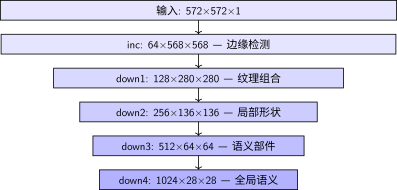
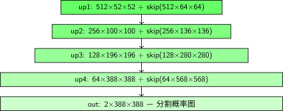

完整实现#
U 形架构详解 中我们看了 U-Net 的四个核心组件。现在把它们组装成一个完整的 U-Net。
完整 U-Net 类#
class UNet(nn.Module):
"""完整 U-Net
参数:
n_channels: 输入通道数（灰度=1，RGB=3）
n_classes: 分割类别数
前向传播维度变化（输入 572×572 为例）:
编码器: inc: 1×572×572 → 64×568×568
down1: 64×568×568 → 128×280×280
down2: 128×280×280 → 256×136×136
down3: 256×136×136 → 512×64×64
down4: 512×64×64 → 1024×28×28
解码器: up1: 1024×28×28 + skip → 512×52×52
up2: 512×52×52 + skip → 256×100×100
up3: 256×100×100 + skip → 128×196×196
up4: 128×196×196 + skip → 64×388×388
输出: outc: 64×388×388 → 2×388×388
"""
def __init__(self, n_channels, n_classes):
super().__init__()
self.n_channels = n_channels
self.n_classes = n_classes
# 编码器（1 → 64 → 128 → 256 → 512 → 1024）
self.inc = DoubleConv(n_channels, 64)
self.down1 = DownSample(64, 128)
self.down2 = DownSample(128, 256)
self.down3 = DownSample(256, 512)
self.down4 = DownSample(512, 1024)
# 解码器（1024 → 512 → 256 → 128 → 64）
self.up1 = UpSample(1024, 512)
self.up2 = UpSample(512, 256)
self.up3 = UpSample(256, 128)
self.up4 = UpSample(128, 64)
# 输出层
self.outc = OutConv(64, n_classes)
def forward(self, x):
# 编码器
x1 = self.inc(x)
x2 = self.down1(x1)
x3 = self.down2(x2)
x4 = self.down3(x3)
x5 = self.down4(x4)
# 解码器（拼接对应编码器特征）
x = self.up1(x5, x4)
x = self.up2(x, x3)
x = self.up3(x, x2)
x = self.up4(x, x1)
logits = self.outc(x)
return logits
这就是完整的 U-Net 前向传播——简单、对称、优雅。没有复杂的控制流，就是一条 U 形通道。
完整 U-Net 的参数量估算
以灰度输入（n_channels=1），二分类（n_classes=2）为例：
编码器：\(\approx 31\)M 参数
解码器：\(\approx 24\)M 参数
总计：约 55M 参数
作为对比，LeNet-5架构详解 的 LeNet-5 约 60K 参数。U-Net 比它大了近 1000 倍——因为通道多（1024 vs 120）、有解码器、有跳跃连接的双卷积。
模型初始化#
def init_weights(model, init_type='kaiming'):
"""Kaiming 初始化 {cite}`he2015delving`（适合 ReLU 激活）"""
for m in model.modules():
if isinstance(m, nn.Conv2d):
nn.init.kaiming_normal_(m.weight, mode='fan_out', nonlinearity='relu')
if m.bias is not None:
nn.init.constant_(m.bias, 0)
elif isinstance(m, nn.BatchNorm2d):
nn.init.constant_(m.weight, 1)
nn.init.constant_(m.bias, 0)
训练配置#
def setup_training(model, device='cuda'):
model = model.to(device)
# 损失函数：交叉熵 + Dice 组合（{ref}`unet-loss`详细讨论）
criterion = CombinedLoss(weight_ce=0.5, weight_dice=0.5)
# Adam 优化器
optimizer = torch.optim.Adam(model.parameters(), lr=1e-4)
# 验证损失不再下降时减半学习率
scheduler = torch.optim.lr_scheduler.ReduceLROnPlateau(
optimizer, mode='min', factor=0.5, patience=10
)
return model, criterion, optimizer, scheduler
评估指标#
Dice 系数不只是损失函数，也是最常用的评估指标。
def calculate_metrics(pred, target, threshold=0.5):
"""计算 Dice 和 IoU"""
pred_bin = (pred > threshold).float() # 概率转二值
target_bin = (target > threshold).float()
tp = (pred_bin * target_bin).sum().item()
fp = (pred_bin * (1 - target_bin)).sum().item()
fn = ((1 - pred_bin) * target_bin).sum().item()
dice = (2 * tp) / (2 * tp + fp + fn + 1e-8)
iou = tp / (tp + fp + fn + 1e-8)
return {'dice': dice, 'iou': iou}
推理示例#
def predict(model, image, device='cuda'):
"""对单张图像做分割预测"""
model.eval()
if len(image.shape) == 3: # (C, H, W) → (1, C, H, W)
image = image.unsqueeze(0)
image = image.to(device)
with torch.no_grad():
output = model(image)
if model.n_classes > 1:
prediction = torch.argmax(output, dim=1) # 取概率最大的类别
else:
prediction = (torch.sigmoid(output) > 0.5).float()
return prediction.cpu().squeeze()
参数量统计#
# 统计模型参数量
model = UNet(n_channels=1, n_classes=2)
total = sum(p.numel() for p in model.parameters())
trainable = sum(p.numel() for p in model.parameters() if p.requires_grad)
print(f'总参数: {total:,}')
print(f'可训练: {trainable:,}')
# 输出: 总参数: 31,031,554
# 可训练: 31,031,554
端到端 Walkthrough：一张细胞图像走完 U-Net#
理论看了这么多，不如拿一张真实的细胞图像追踪完整流程。假设输入是 572×572 的灰度图（单通道）。
编码器阶段#

编码器各层输出维度与内容
每经过一个下采样块，空间减半、通道加倍、感受野扩大。一路走来，网络从"看到像素的边缘"变成"理解这是细胞核"。
解码器阶段#

解码器各层：上采样+跳跃连接
数值示例：看一个像素如何被分类#
想象图像左上角有一个细胞核边缘的像素：
输入层：这个像素的灰度值是 142（0-255 范围）
inc 层：3×3 卷积核检测到它左右两侧的像素差异大 → 判断为"边缘"，激活值变高
down1 层：池化后它被合并到 2×2 区域的最大值中，丢失了精确坐标，但保留了"这里有边缘"的信息
down2 → down4：随着下采样，它从"一个像素的边缘"变成了"一块区域的纹理"→"一个局部的形状"→"一个细胞核的组成部分"
最底部：1024 维的特征向量说"这是一个细胞核区域"
解码器上采样：一步步恢复分辨率，每次拼接编码器对应层的特征，补充精确位置
输出层：这个像素的 2 个输出值经过 softmax：[0.12, 0.88] → 预测为"细胞"（第 1 类）
整个过程，这个像素的身份从"142 灰度值"变成了"细胞核像素"。U-Net 的对称结构确保了 语义理解（编码器） 和 空间精度（跳跃连接） 在这个过程中都得到了保留。
这就是一个可用版 U-Net。但光有模型还不够——医学图像通常只有几十张标注数据。下一节 数据增强与训练技巧 我们看看如何用数据增强在有限数据上训练出好模型。
贡献者与修订历史
查看详细修订记录
-
b5e265a2026-04-28 - Heyan Zhu: docs(unet): restructure documentation and update content -
0c291d72025-12-10 - Heyan Zhu: docs: restructure course materials and add new content